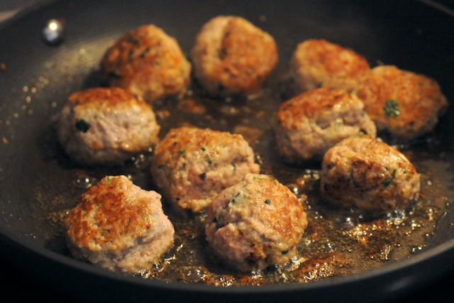

Step 3: Dredge the meatballs in the flour until lightly but evenly coated. Heat 1/4 cup olive oil and the vegetable oil in a large, heavy skillet over medium-high heat. Slip as many meatballs into the skillet as will fit without crowding. Fry, turning as necessary, until golden brown on all sides, about 6 minutes. Adjust the heat as the meatballs cook to prevent them from overbrowning. Remove the meatballs and repeat if necessary with the remaining meatballs.
